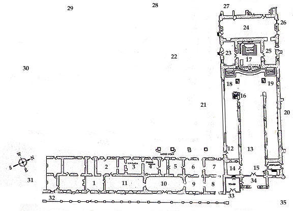

The Virtual Map Tour

Click on any highlighted numeral to view a photograph of that area of the Mission.
Map Courtesy of Old Mission San Juan Bautista.
Photographs & Web Site Design by Ruben G. Mendoza, 1998.
All Rights Reserved.